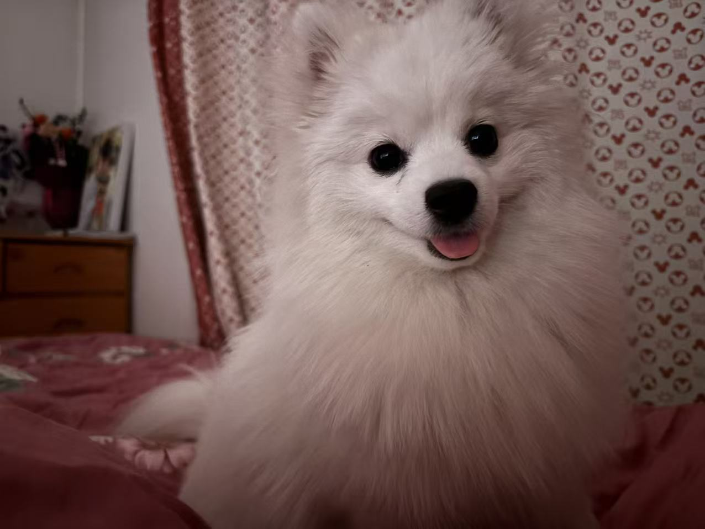

LITTLE MOMENTS, BIG HAPPINESS
小小瞬间，满满喜欢✳
共 6 个可爱瞬间
这里暂时住着几位示例小狗，等球球的真实照片来填满相册。示例照片来源：Unsplash
A LITTLE SPACE, ALL ABOUT YOU
世界很大，
这里装着球球的小日常。
不赶时间，不追热点。
只想把一起度过的普通一天，变成以后翻起来会笑的回忆。
散步 · 陪伴 · 记录
愿每一天，
都有值得摇尾巴的事。